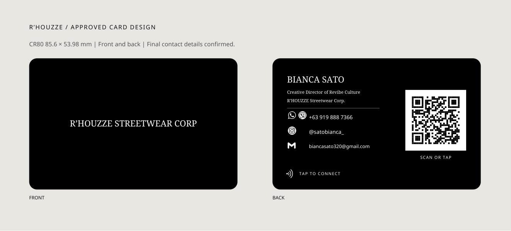

Bianca Sato / Final card design
Approved black-and-white layout. All contact details confirmed. Front and back are shown below.

Open card-size print PDFOpen print PDF with bleedFront PNG · 300 dpiBack PNG · 300 dpi


Print instructions
Finished CR80 size: 85.6 × 53.98 mm. Each PDF contains two pages: front first, back second. For two physical cards, print one front/back set for Joe and one for Bianca.
Print at 100% / Actual size, not Fit to page. Use the card-size PDF if your PVC printer requires exact dimensions. The bleed PDF includes 3 mm extra on each edge, giving 91.6 × 59.98 mm total, with the trim area defined. Confirm your printer's required format.
The QR code has been decoded and verified against https://py-tap.github.io/connect/bianca/. Program the NFC chip separately with that same URL. Rounded corners are shown in the preview; the print artwork extends to the edges. Use your printer's color profile and check a sample for size, text clarity, QR scanning and front/back alignment.